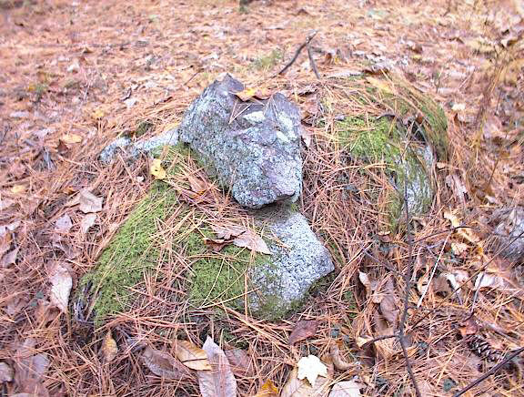
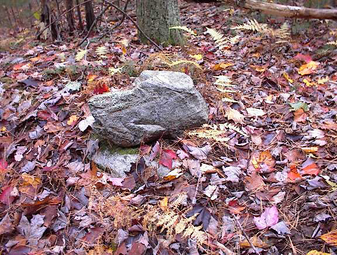
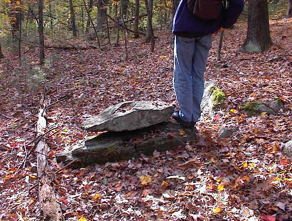
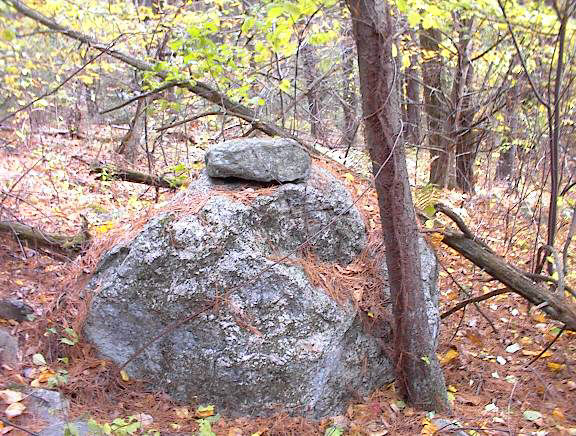
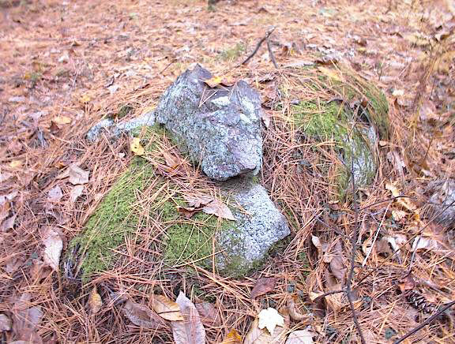
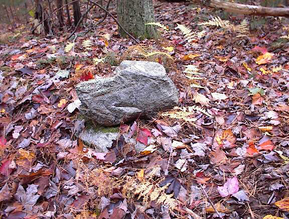
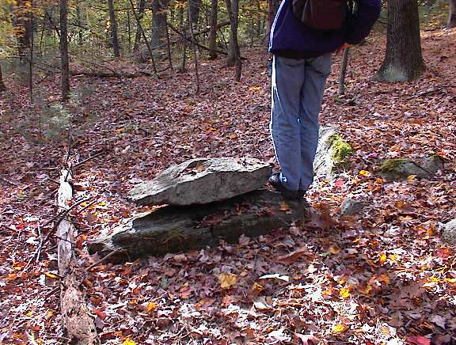
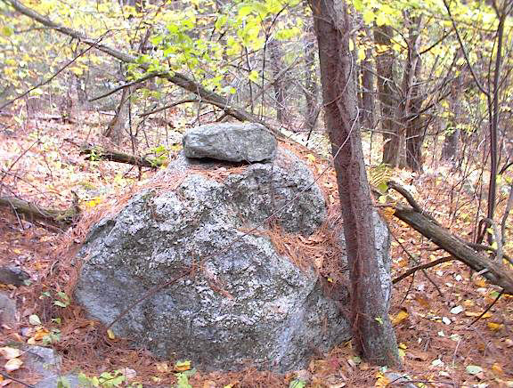
One of the loveliest and most suggestive things to find in the woods is a single rock placed on top of another. It stands out, like an exclamation point, visible from a distance.
Sometimes rock-on-rocks appear grouped together near the edge of a wetland; or perhaps you will see a dozen of them spread thinly across the slopes of a hill. This indicates systematic rather than random construction and implies an organized function. I find evidence for several possible functions. They might mark a trail, designate a boundary, or create a sense of enclosure around a natural feature like a spring. They often signal the presence of other stone constructions nearby. Here is the evidence for these and some other possibilities.
In the book Animal Tracks and Hunter's Signs (1), Ernest Thompson Seton tells us that Indians used rock-on-rock to mark a trail.
There is some evidence for this around here. Here is a large rock-on-rock located in a gully between two summits of a hill in Littleton.
A few feet away is a split-wedged rock. Both features occur near the high point of the gully. The large rock-on-rock is certainly an interesting artifact. It would take significant effort to lift the upper rock into place and, from the evidence of the thin stone shims wedging it in place, it was intended to stay in this exact position. It appears to mark the beginning of a trail. Exploring nearby, I found what seemed to be a faint trail running off uphill from this spot. In the next picture, looking up the trail, you can see another rock-on-rock and can just make out one more higher up the slope. This faint trail leads over the hill, down into another gully with more rock-on-rock markers, back up another slope, and then disappears at the edge of a housing development.
How could a trail remain after all these years of farming, pasturing, logging and other disturbances? Possibly a small amount of logging and pasturing would not necessarily destroy everything. But on the other hand the trail might be recent.
Sometimes rock-on-rocks, by themselves, point towards something interesting.
This one from Boxborough is arrowhead shaped and points towards the left in the picture. It indicates a hilltop covered with large glacial erratics and rock piles. I have had good luck following such clues.
Rock-on-rocks are frequently found at the periphery of larger sites of more substantial rock piles, so it is artificial to consider them in isolation. But it is instructive. Here is a location in Acton with many rock piles near a spring. In the picture, the spring is in the background with lusher growth.
There are several rock-on-rocks along the edge. They appear to act like a fence or boundary, however this could be a matter of where larger rocks happened to be available as supports, or possibly simply that the rock-on-rocks are grouped near the spring.
It is likely that some groups of nearby rock-on-rocks are enclosing a space. In the next picture from Northfield MA, a rock-on-rock in the foreground and one in the background seem to enclose the moist spot in between, which is a spring. In the next picture, from Littleton's Long Pond Conservation Land, three or more rock-on-rocks are grouped together.
Examples like these suggest an inter-relationship if not an enclosure. Instead of enclosing a feature of interest they may be signaling it, helping to decorate it, to enhance it, or to dramatize it. You may see rock-on-rocks around a spring. You may also see them around a large boulder, or arranged around some other stone construction.
In this context it is very interesting that one almost never sees a rock-on-rock made of quartz. The only examples I have seen were near a well traveled path in Littleton. If it is true that quartz was used as a window or transmitter then it would not be a suitable material for creating an enclosure, or a barrier, or a focus around something else.
Sometimes many rock-on-rocks will be found in the same area with two or three visible at a time. Typically this happens where it is both wet and rocky. For example, they are almost crowded in one place at Wolf Swamp in Boxborough and there are similar wetlands in Acton, Stow, and Littleton.
I am told [Tim Fohl, private communication about Wolf Swamp] that in several instances two or more of the rock-on-rocks form a line that is pointing towards a solstice. This suggests yet another possible function for groups of rock-on-rocks: they could be forming an alignment.
Another example which supports the idea that a rock-on-rock may be part of an alignment is when the rock is in an awkward and un-natural position, held in place by shims. There are several examples of this and it might be a requirement for an alignment, whereas it is hard to imagine it being needed for the other functions described here.
On several hills in Acton, Boxborough, and Harvard, there are many rock-on-rocks overall, but not grouped together. These next ones are on a hill in Harvard. It is possible that the shape or coloring of each one is significant.
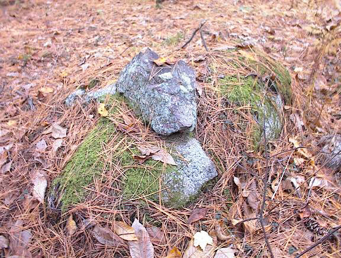
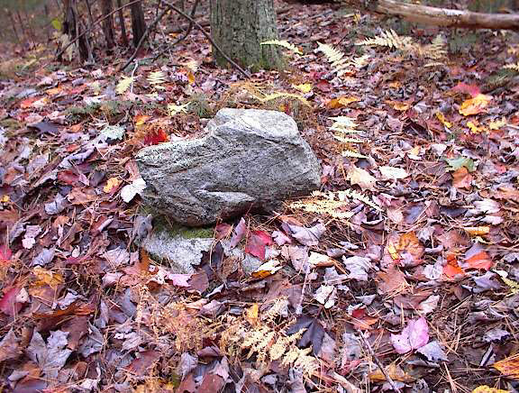
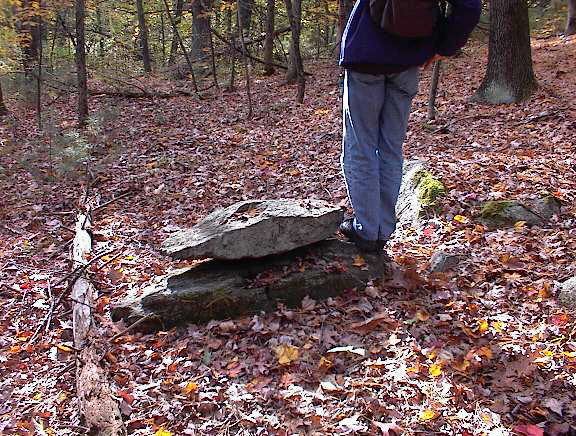
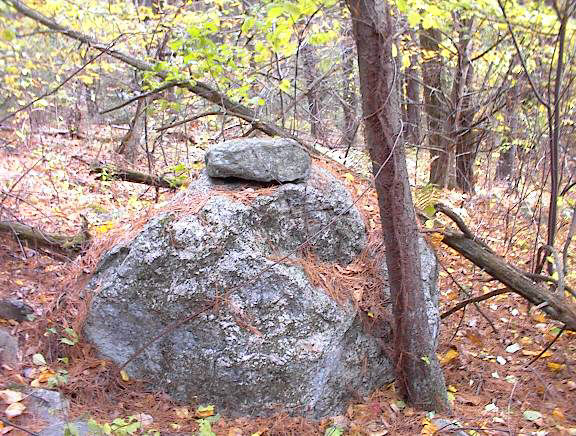
There are probably many more hills like this further west. They might have been orchards or pastures and their slopes may never have been plowed. I am confident there are many thousands of rock-on-rock to be seen there. As to how features like these could have remained un-damaged over time: possibly the land owners themselves or their workers created the structures.
This first picture, from Carlisle, suggests a birdlike shape. The shaped rock is obvious. If we are inquiring into the intent of making a rock pile, something like this should not be ignored.
Making the case for representation still more strongly are two examples of rock-on-rock-on-rock found next to each other, in Boxborough near Flagg Hill. Both have an upper rock with a delicate spike sticking out one end. Found a few feet apart, it cannot be a coincidence that they have the same odd shape. Other shapes occur which are not bird-like.
Also, in addition to suggestive single shapes, there are examples with a shape parallelism between upper and lower rocks.
These could be a coincidence or could be intentional. Certainly the "cashew" shape, in the first picture, is very common and often occurs in pairs.
Rock-on-rocks have a special aesthetic quality of their own. They are so simple. They are easy to see in most weather and it is nice to see them when you are out exploring.
They are particularly charming in the snow, especially when you cannot see the rock-on-rock but know it is there.
Whenever the question arises about how rock-on-rocks could be ancient and not disturbed, the answer is that they may not be ancient. Some could be old but clearly some are recent. For example, from the woods along Rt 28 in Falmouth, a rounded bowl shaped flake of rock spalled off of a rock, was turned upside down and placed back on top. This is so precarious and there is no debris buildup around it, how old could it be? Probably not very old. If these artifacts are Native American, they suggest an ongoing relationship and use of the woods by Indians.
Whatever their age or how they could have survived in a landscape so thoroughly used, rock-on-rocks are quite common in eastern Massachusetts and I am told [Norman Muller, private communication] they are also found in Vermont and Pennsylvania. There are several hypotheses about how they could have been used and what was their intent. Aside from the idea of representing a figure like a bird, there is some evidence they were used to mark a boundary or indicate a barrier. Their use for marking a trail is less common.
Over time, one hopes to have a better understanding of rock-on-rocks and whether they have one function or many different functions. Becoming aware of them, they become easy to see. For me, it is always encouraging to see one through the bushes or a distance away - usually the first sign I am approaching a site with other interesting features.
(1) Animal Tracks and Hunter
Signs. Ernest Thompson Seton. Doubleday and Co. Garden City, NY,
(1958) p 149. Reprinted from Ernest
Thompson Seton's Big Book of Country Living Garden City Pub.
(1921) p.162. See also pp161-166.
(2) Pots Point the Way? article by Dan Boudillion.